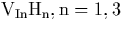
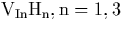

``You've been in my life so long... I can't remember anything else.''Ripley, Alien 3 (1992)
Hydrogen plays many different roles in III-V materials. It is traditionally thought of as a passivating element, able to diffuse rapidly through the lattice and terminate dangling bonds associated with other point defects, resulting in electrically inactive complexes. However hydrogen plays many more roles than this, and is actually able to form electrically active donors when fully hydrogenating Group-III vacancy sites (see below). In order to have a better understanding of the role played by hydrogen in these systems we examine two sets of problems; hydrogenated vacancies in InP, and passivated Group II elements in InP and GaAs.
This chapter initially examines how hydrogen can complex with indium
vacancies in InP, producing a variety of donor and acceptor-like
defects depending on the number of hydrogen atoms present. It has
been suggested that iron in InP is compensated by a donor, related to
the 2316 cm-1 local vibrational mode and previously assigned to
the fully hydrogenated indium vacancy,  . We find that
. We find that
 acts as a single shallow donor. It has a triplet
vibrational mode close to this value, consistent with this assignment.
We also analyse the other hydrogenated vacancies  and determine their structure, vibrational modes, and charge
states.
acts as a single shallow donor. It has a triplet
vibrational mode close to this value, consistent with this assignment.
We also analyse the other hydrogenated vacancies  and determine their structure, vibrational modes, and charge
states.
Substitutional Group II impurities act as acceptors in InP, but can be passivated by hydrogen. We investigate the passivation of beryllium by hydrogen and find that the hydrogen sits in a bond centred site and is bonded to its phosphorus neighbour. Its calculated vibrational modes are in good agreement with experiment. We then look at H passivation of Be and Mg in InP and GaAs, to examine trends with variation in host material.
In order to accurately calculate the vibrational modes a set of parameters for the Musgrave Pople potential is required for the host material (see Section 2.8.2). As our group did not have this for InP, the first task was to calculate them. This also allows calculation of the bulk phonon dispersion curves, which provides a way of evaluating the quality of the parameterisation.